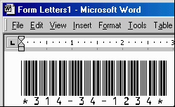

Our Freeware Code 39 TrueType Barcode Font allows you to print numeric bar codes with the Code 3 of 9 symbology. PostScript and OpenType fonts are also provided in the ZIP file. Download the free bar code font now
This freeware bar code font may only be used for personal use and by organizations that are non-profit, educational or have a gross annual revenue of less than $250,000 USD. Any other use requires a purchase of our Code 39 Font Advantage Package. For details, please review the license agreement.
This freeware bar-code font does not contain the characters A-Z, just the numbers and symbols. If you need to encode letters in barcodes or if you need this font in Macintosh classic, PCL, laserjet soft font or PostScript formats, you will need to purchase our Code 39 Font Advantage Package which is supplied in 6 different bar code heights and 4 different versions - a total of 24 fonts.
|
Barcode Font Piracy Notice |
To install the TrueType font in Windows, run the INSTALL.EXE program in the ZIP file download or perform the following for manual installation:
To create the correct output for the Code 39 barcode font you will need to type in the corresponding number with asterisks between them, for example *153969*. In Microsoft Word, you will need to use "!" instead of the asterisk because of a formatting issue. For example: !153969!
If the font is not viewable in font selection list of your application after installation, check your application settings. Most applications allow you to disable a feature that lists font names in their font. For example, in Microsoft Office if the font is not viewable in font selection list, follow these steps:
We have included Microsoft Access, Excel and Word examples of use in the package. After installation, you can find icons to these examples in the Start - Programs - IDAutomation.com Code 39 Font program group. In our Microsoft Access example, we use the ID field as the barcode to look up records. This makes the lookup process very simple because every database has an ID field.
If you find that you need a more compact barcode type than Code 39, consider Code 128 or a 2D symbology such as PDF417 or DataMatrix. If you need a barcode type that can still be read when damaged, consider PDF417 or DataMatrix. To see an evaluation of barcode sizes and types, refer to that portion of our Barcoding for Beginners Tutorial.
To learn more about using Code 39, refer to the Code 3 of 9 FAQ and Tutorial.
We sell several easy to use Barcode Readers. In addition, our USB Barcode Scanners and Wands can be used on any computer with a USB port including Windows, Macintosh and Linux systems. The reader acts as an external keyboard so that anything scanned is entered in your computer as if you typed it from the keyboard. To use a bar code wand or scanner with your application, you may also wish to read our information about how to scan data into applications.
We also have many other products to offer for barcoding purposes including:
The Software may not be distributed with an application or an application's
installation files. This type of distribution requires a Developers License
to our Code
39 Font Advantage Package or the
EZ Barcode
Font Package.
Developers may also create a distributed application to access the IDAutomationHC39M
font name and request that users download this free font only if they meet the
license qualifications of the free font. If they do not meet the license
qualifications, they must be instructed to purchase
|
Point Size |
Approximate X dimension |
Approximate Character Width | ||
| 24 | .42 mm | .016" | 6.72 mm | .265" |
| 16 | .28 mm | .011" | 4.48 mm | .177" |
| 12 | .21 mm | .008" | 3.36 mm | .130" |
| 8 | .14 mm | .006" | 2.24 mm | .090" |
| 6 | .105 mm | .004" | 1.68 mm | .066" |
| Wide to Narrow Ratio: | 3:1 | |||
Because this is a free product we cannot offer any other support than what is documented at the website. Phone and email support are only provided for users that purchase our products. The following links may be helpful in solving problems:
|
Product Links: [Barcode Fonts | Barcode Components | Barcode Label Software | Barcode Scanners] |
Copyright © 1999-2004 IDAutomation.com, Inc. All rights reserved. All trademarks mentioned are the property of their respective owners.